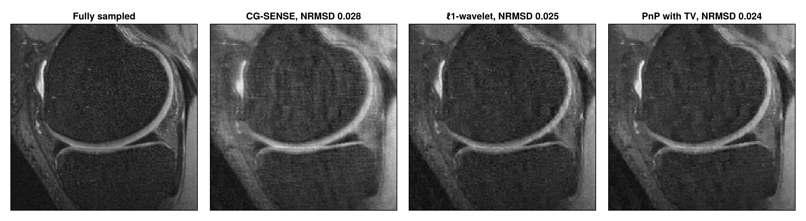

Use a Plug-and-Play Prior
A plug-and-play (PnP) method replaces the proximal map of the regularization term in an iterative reconstruction by an image denoiser (Venkatakrishnan et al., 2013). This way, any denoising algorithm can serve as the prior, including one without a known cost function such as a trained neural network, with which PnP outperformed compressed sensing in the MRI experiments of Ahmad et al. (2020). RegularizedLeastSquares.jl provides the regularization term PnPRegularization (see its how-to), which params[:reg] takes like any other term. This guide shows how to use a denoiser in reconstruction with the knee data, sampling and coil sensitivities of Multi-Coil Reconstruction:
using MRIReco, MRIFiles, MRISampling, MRICoilSensitivities, CairoMakie
using Pkg.Artifacts
artifacts = joinpath(pkgdir(MRIReco), "docs", "Artifacts.toml")
datadir = ensure_artifact_installed("MRIRecoDocsData", artifacts; io = devnull)
acqData = AcquisitionData(ISMRMRDFile(joinpath(datadir, "knee_3dFSE_slice170.h5")))
rootSumOfSquares(images) = sqrt.(sum(abs2, images, dims = 5))[:, :, 1, 1, 1, 1]
referenceImage = rootSumOfSquares(
reconstruction(acqData, Dict{Symbol, Any}(:reco => "direct", :reconSize => (320, 320))))
acqDataSub = sample_kspace(acqData, 4.0, "poisson", calsize = 30, seed = 1234)
sensitivities = espirit(acqDataSub, (6, 6), 30, eigThresh_2 = 0)The Denoiser
The denoiser is a function of one array. PnPRegularization calls it with an array of the size shape, separately for the real and the imaginary part of the image, each scaled to the interval [0, 1], and expects a new array of the same size back. It must not change its argument, which is why the denoiser below works on a copy. The array has the precision of the data, here Float32. With ignoreIm = true, PnPRegularization denoises the real part only, which real-valued images need, since the scaling would turn their zero imaginary part into NaN. This guide uses a denoiser that comes with RegularizedLeastSquares.jl and needs no further package, the proximal map of the total variation, whose weight sets how strongly it smooths:
function tvDenoiser(x)
y = vec(copy(x))
prox!(TVRegularization(0.01f0; shape = size(x)), y)
return reshape(y, size(x))
endSolver Settings
The weight of PnPRegularization, its first argument, works differently from the weight λ of the other terms. In each iteration, the term replaces its input $\mathbf{v}$ by $\mathbf{v} - w\,(\mathbf{v} - D(\mathbf{v}))$ with the denoiser $D$ and the weight $w$ that the solver passes, which has to lie in [0, 1]. ADMM passes the weight divided by $2\rho$, with the penalty parameter $\rho$ = params[:rho], so a weight of $2\rho$ applies the denoiser fully. Unlike for a convex regularization term, $\rho$ changes the fixed point of PnP ADMM (Ahmad et al., 2020), and it has to be chosen together with the strength of the denoiser. With params[:vary_rho] = :PnP, ADMM doubles $\rho$ whenever the change of the iterates is more than 90 % of the previous change, following Chan et al. (2017), so that the denoiser acts less and less and the iterations settle. params[:vary_rho] = :balance can also halve $\rho$ and thereby push the passed weight above 1, where it is set to 1 with warnings.
shape is a vector, so the guide converts the tuple params[:reconSize]. The weight must not be scaled with the data, so the guide sets params[:normalizeReg] explicitly to its default, NoNormalization():
params = Dict{Symbol, Any}()
params[:reco] = "multiCoil"
params[:reconSize] = (320, 320)
params[:senseMaps] = sensitivities
params[:solver] = ADMM
params[:rho] = 0.1
params[:vary_rho] = :PnP
params[:normalizeReg] = NoNormalization()
params[:reg] = PnPRegularization(2 * params[:rho]; model = tvDenoiser,
shape = collect(params[:reconSize]))
params[:iterations] = 30
imagePnP = abs.(reconstruction(acqDataSub, params)[:, :, 1, 1, 1, 1])FISTA takes params[:rho] as its step size and passes the weight multiplied by it, so a weight of $1/\rho$ applies the denoiser fully. POGM and OptISTA also take params[:rho] as their step size, but multiply the weight by larger factors that change from iteration to iteration. With POGM, the factor stays below $3\rho$, so a weight below $1/(3\rho)$ keeps the passed weight below 1. With OptISTA, the largest factor grows about in proportion to the number of iterations; with 30 iterations, it is about $13.1\rho$, and a weight below $1/(13.1\rho)$ keeps the passed weight below 1. For all three, the step size has to be small enough for the gradient step, as Ahmad et al. (2020) note for FISTA. SplitBregman passes the weight divided by $\rho$, so a weight of $\rho$ applies the denoiser fully.
Comparison
For comparison, the guide computes the CG-SENSE and the $\ell_1$-wavelet reconstruction of Multi-Coil Reconstruction:
paramsCS = Dict{Symbol, Any}(:reco => "multiCoil", :reconSize => (320, 320),
:senseMaps => sensitivities,
:normalizeReg => MeasurementBasedNormalization())
paramsCS[:solver] = CGNR
paramsCS[:reg] = L2Regularization(1e-3)
paramsCS[:iterations] = 10
imageSENSE = abs.(reconstruction(acqDataSub, paramsCS)[:, :, 1, 1, 1, 1])
paramsCS[:solver] = ADMM
paramsCS[:reg] = L1Regularization(0.2)
paramsCS[:sparseTrafo] = "Wavelet"
paramsCS[:iterations] = 30
imageWavelet = abs.(reconstruction(acqDataSub, paramsCS)[:, :, 1, 1, 1, 1])The figure shows a detail of the joint and, in the titles, the normalized root mean squared deviation of the whole image from the fully sampled one. Like the $\ell_1$-wavelet regularization, the total variation reduces the stripes that remain after CG-SENSE, but, since it favors piecewise constant images, it also turns the fine grain inside the bone into patches:
deviation(image) = round(nrmsd(referenceImage, image), sigdigits = 2)
detail = (100:260, 80:240)
images = [referenceImage => "Fully sampled",
imageSENSE => "CG-SENSE, NRMSD $(deviation(imageSENSE))",
imageWavelet => "ℓ1-wavelet, NRMSD $(deviation(imageWavelet))",
imagePnP => "PnP with TV, NRMSD $(deviation(imagePnP))"]
fig = Figure(size = (1200, 330))
for (i, (image, title)) in enumerate(images)
ax = Axis(fig[1, i], title = title, aspect = DataAspect(), yreversed = true)
heatmap!(ax, image[detail...]', colormap = :grays)
hidedecorations!(ax)
end
fig
A Trained Network
A trained network takes the place of tvDenoiser as model; $\rho$ and the weight then have to be chosen again for it. Since PnPRegularization passes the real and the imaginary part one at a time, a network that takes both parts together as two channels, as in Ahmad et al. (2020), does not fit it. For a Flux.jl model net that expects one channel and a batch dimension, the denoiser could be:
denoiser(x) = reshape(net(reshape(x, size(x)..., 1, 1)), size(x))If the network was trained on a scaling other than [0, 1], the keyword input_transform of PnPRegularization selects it, for example input_transform = RegularizedLeastSquares.ZTransform for zero mean and unit standard deviation.
Limits
- For a denoiser that is not the proximal map of a regularization term, the iterations are not guaranteed to converge. Chan et al. (2017) prove fixed-point convergence with their adaptive $\rho$ for bounded denoisers, and Kamilov et al. (2023) review further conditions, which trained networks can be made to satisfy.
- A denoiser that smooths too little lets the result approach the one of the same solver without regularization.
MeasurementBasedNormalization, which the $\ell_1$-wavelet reconstruction above uses, also scales the weight ofPnPRegularization, here by about 174. The passed weight is then set to 1 with warnings in every iteration, and the result is worse than without the normalization.- The denoiser,
params[:rho]and the weight of this guide are chosen for ADMM. With FISTA, the same denoiser applied fully gives a worse result than CG-SENSE, so they have to be chosen again for another solver.
This page was generated using Literate.jl.